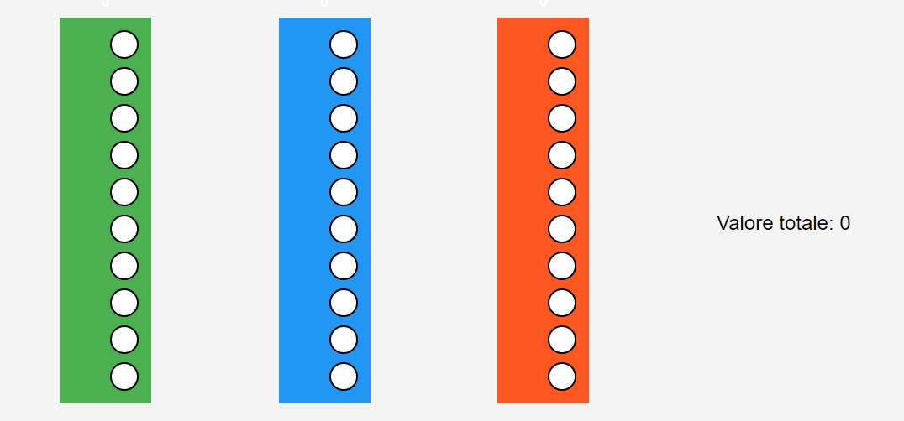

LA STORIA DELL'INFORMATICA

L'abaco è un antico strumento di calcolo, utilizzato come ausilio per effettuare operazioni matematiche è il primo strumento usato per i calcoli sin dal XXI secolo a.C. in Cina e nella Mezzaluna Fertile, e utilizzato in seguito anche tra i Greci e i Romani L'abaco è un sistema per rappresentare, in forma visiva, dei numeri utilizzati in operazioni matematiche molto semplici come l'addizione e la sottrazione. Nell'abaco, elementi di varia natura sono allineati su una serie di colonne parallele. Seguendo precise convenzioni nel posizionare tali elementi, si rappresentano dei numeri. L'abaco a colonne è tuttora utilizzato.